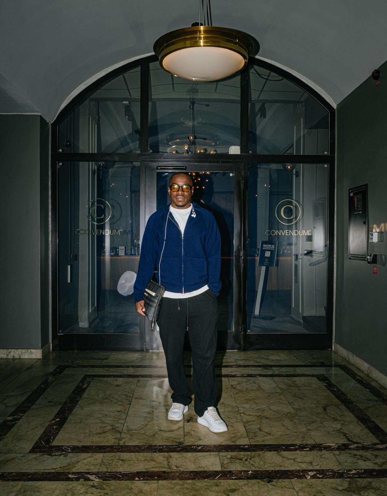
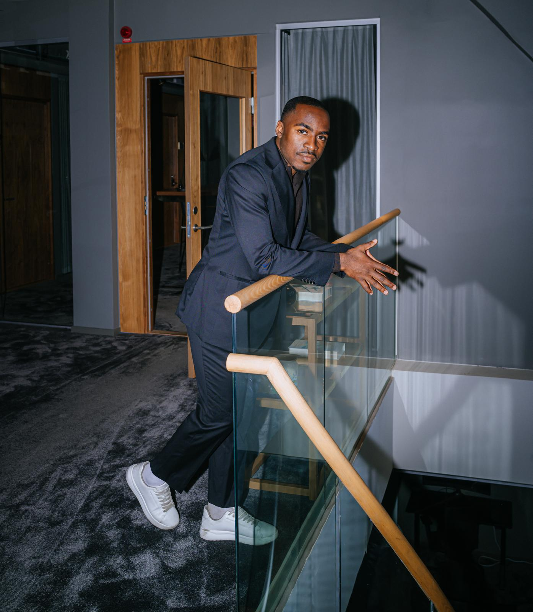
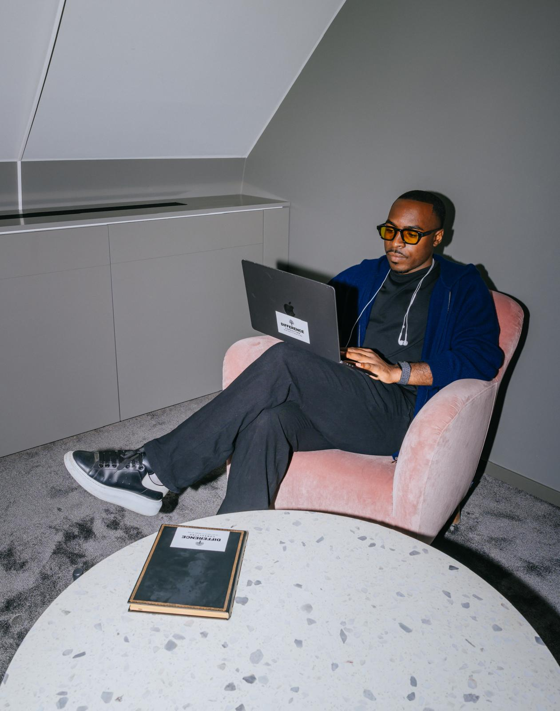
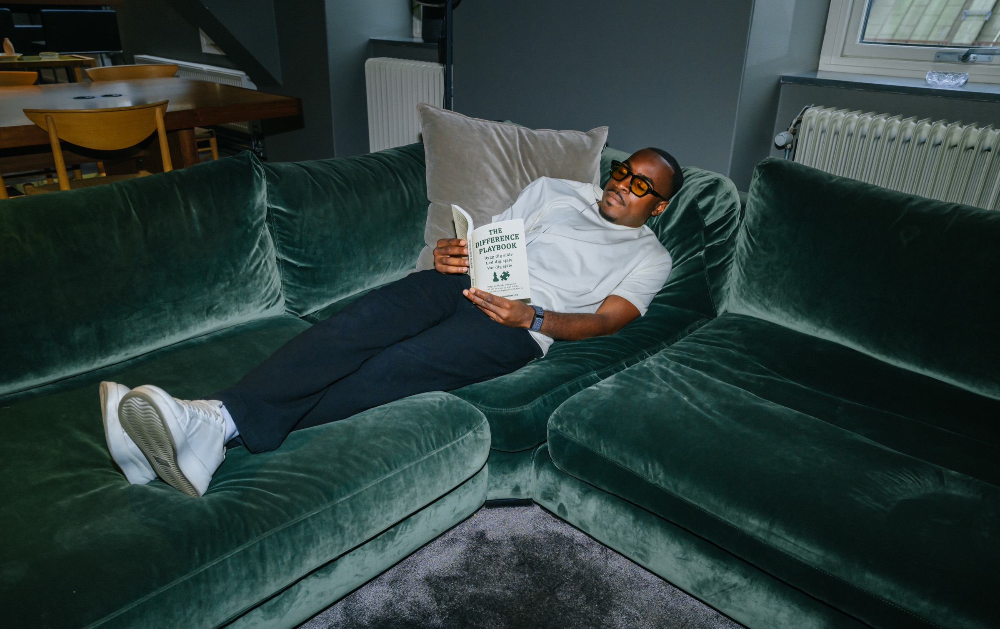

Difference Consulting
Människan bär prestationen.
Vi vägleder människor i självledarskap genom personliga samtal och uppföljning över tid. Arbetet handlar om att förstå sig själv och göra medvetna val i vardagen.
Vi arbetar med fotbollsspelare, ledare och människor utanför idrotten.


Varför vi finns
Människans utveckling förtjänar samma uppmärksamhet som prestationen.
Vi arbetar nära nog för att förstå och tydligt nog för att utmana. Människan äger sin riktning.
Vår vision
Vi vill göra självledarskap till en självklar del av människors utveckling.
Det inre arbetet ska följa människan genom hela livet, också när ambitionerna växer, möjligheterna blir större och ansvaret ökar.
Genom Differencismen vill vi göra självledarskap tillgängligt och användbart för fler människor, inom och utanför idrotten.

Det vi bygger
Difference Consulting är bolaget bakom Differencismen, filosofin och systemet för självledarskap.
Vi utvecklar vägledning och material som människor kan använda både tillsammans med oss och på egen hand. Vi utvecklar innehållet utifrån det vi lär oss i arbetet med människor.
Vi bygger för att Differencismen ska kunna nå fler, med samma omsorg om människan och samma krav på att innehållet ska fungera i verkligheten.
The Difference Playbook
The Difference Playbook gavs ut 2025. Boken innehåller reflektioner och praktiska uppgifter om självledarskap.
Läs. Skriv. Pröva i din vardag. Återvänd med det du upptäcker.
Difference Consulting grundades 2024 av Rickson Mansiamina.

LED DIG SJÄLV. FÖRST.